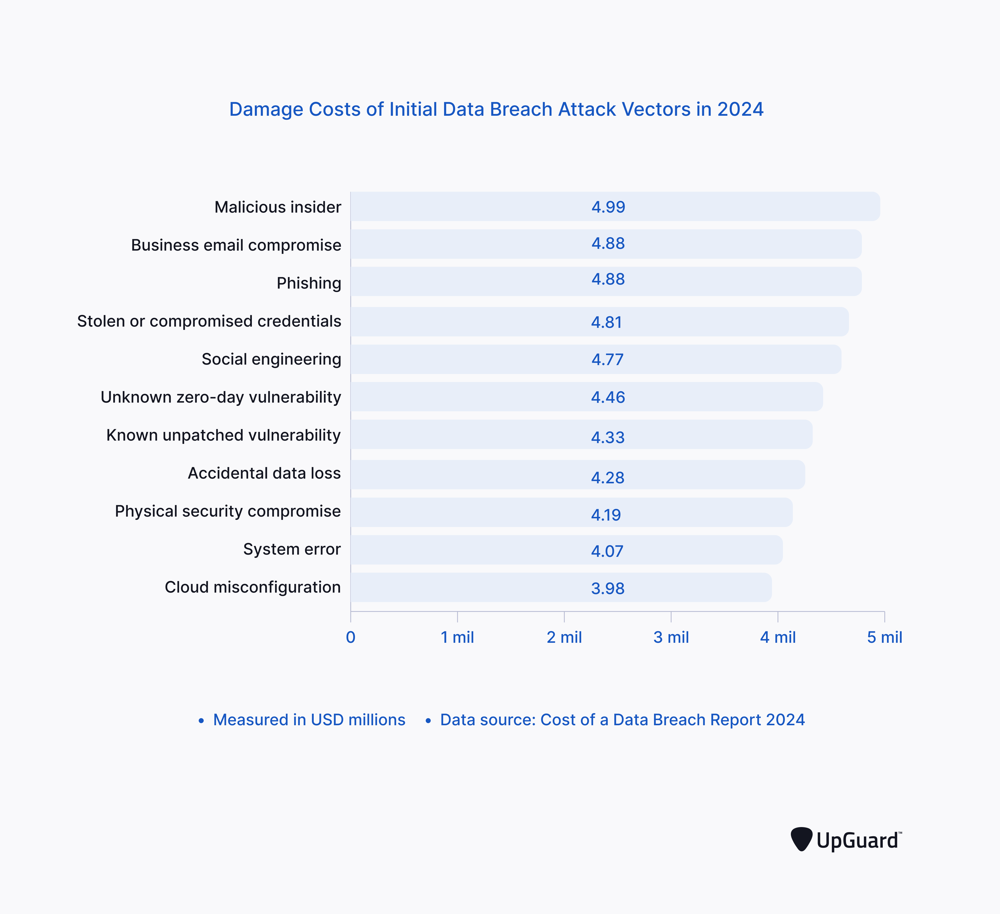

An insider threat is a threat that arises from any person who has or had authorised access to knowledge ofa comapanies resources, including personell, facilities, networks and systems, and has the potential to harm an organisation. According to a verizon data breach report, it was said that ~20% of breaches were caused by actors within an organisation. 1

There are plenty of tools and measures in place that can help companies identify potential insiders:
-
I love you the more in that I believe you had liked me for my own sake and for nothing else
But man is not made for defeat. A man can be destroyed but not defeated.
I have not failed. I've just found 10,000 ways that won't work.